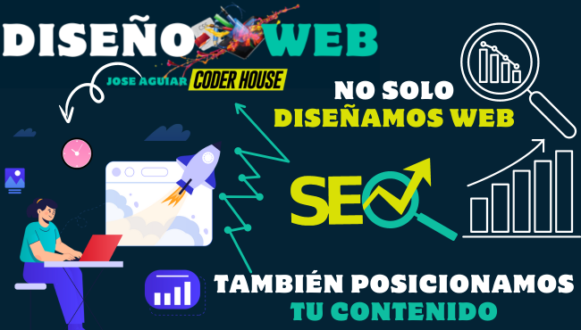

Servicios de SEO para Maximizar tu Presencia en Línea y Aumentar tu Visibilidad
El SEO (Search Engine Optimization) es clave para mejorar la visibilidad de tu sitio web en los motores de búsqueda y atraer tráfico orgánico. En JoséAguiar Digital Solutions, ofrecemos estrategias de SEO adaptadas a tus necesidades comerciales, asegurándonos de que tu sitio alcance las primeras posiciones en los resultados de búsqueda y se destaque frente a la competencia.
¿Qué es el SEO y Por Qué es Importante?
El SEO es un conjunto de prácticas y técnicas diseñadas para mejorar la clasificación de un sitio web en motores de búsqueda como Google. Esto incluye optimización en la página, investigación de palabras clave, construcción de enlaces y optimización de contenido. El SEO ayuda a tu negocio a ganar visibilidad, atraer visitantes cualificados y convertirlos en clientes.
Nuestras Estrategias de SEO
Ofrecemos una gama de servicios de SEO, que incluyen:
Tips Seo - Eligiendo Nuestras Keyword
Elegir las palabras clave (keywords) correctas es uno de los aspectos más importantes del SEO (Search Engine Optimization). Las palabras clave son los términos o frases que las personas escriben en los motores de búsqueda para encontrar contenido, productos o servicios. Por eso, seleccionar palabras clave adecuadas es esencial para asegurarse de que nuestro sitio web llegue al público adecuado. Aquí te compartimos algunos tips para hacer una selección de keywords efectiva.